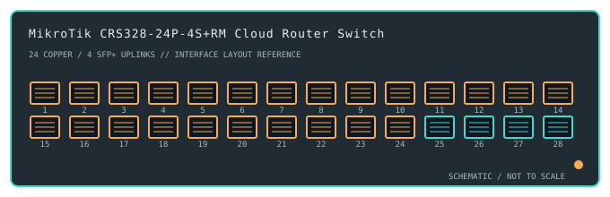

[ MODEL-SPECIFIC NETWORK HARDWARE ]
MikroTik CRS328-24P-4S+RM Cloud Router Switch
A 1U managed switch with 24 Gigabit PoE-out copper ports, four 10GbE SFP+ uplinks, and RouterOS or SwOS operation.

IDENTIFICATION: Confirm the complete product label and hardware revision before applying power, firmware or transceiver assumptions. Link and fabric rates below are nominal vendor specifications, not test results.
Detailed specifications and compatibility
| Subcategory | Managed switches |
|---|---|
| Exact product and model | MikroTik CRS328-24P-4S+RM Cloud Router Switch |
| Ports / physical interface | 24 × 10/100/1000BASE-T RJ-45 PoE-out ports and 4 × 10GbE SFP+ cages; maximum per-port PoE output is 30W under supported power conditions. |
| Bus and host connection | 1U rack-mount Ethernet switch/router appliance. Ethernet endpoints attach directly; SFP+ hosts require compatible 10GbE transceivers/DACs and matching link partners. |
| Nominal switching performance | The CRS328 switch-fabric specification is up to 128Gb/s switching capacity; forwarding performance varies with packet size, configuration and whether RouterOS features are enabled. No specimen benchmark is claimed. |
| Power over Ethernet | 802.3af/at-compatible PoE-out is available on copper ports. The product's power budget is shared; aggregate available output depends on the installed supply, mains input and consumption of the switch. |
| Management and software | Dual-bootable MikroTik RouterOS or SwOS. Web configuration is available; RouterOS features and licensing/software behavior differ from the simpler SwOS switching interface. |
| Power and physical form | Rack enclosure ships with an internal high-wattage AC supply and supports redundant power input on the documented model. Verify supply and PoE budget against the unit label before powering loads. |
| Compatibility | Use standards-compatible 1GbE copper devices and supported PoE-powered devices within per-port and total budgets. SFP+ links require 10GbE-compatible modules/cables and matching wavelength/media; observe fiber polarity and module coding. |
| Variant identification | CRS328-24P-4S+RM is distinct from non-PoE CRS326 and CSS models. Port PoE status, total budget and available features depend on exact power input and chosen RouterOS/SwOS version. |
| Measured throughput | No physical sample was benchmarked for this record. Nominal line rate and switching-fabric ratings are not measured application throughput. |
Revision-specific use notes
CRS328-24P-4S+RM is distinct from non-PoE CRS326 and CSS models. Port PoE status, total budget and available features depend on exact power input and chosen RouterOS/SwOS version.
Use standards-compatible 1GbE copper devices and supported PoE-powered devices within per-port and total budgets. SFP+ links require 10GbE-compatible modules/cables and matching wavelength/media; observe fiber polarity and module coding.
Dual-bootable MikroTik RouterOS or SwOS. Web configuration is available; RouterOS features and licensing/software behavior differ from the simpler SwOS switching interface.
Archival, ESD and preservation notes
Record the full SKU and hardware revision, serial/date code, firmware release, supply label, installed transceiver identifiers and physical port test results. Keep configuration backups free of credentials and private network details.
Disconnect mains and attached PoE loads before service. Keep optics capped and store transceivers separately with their wavelength, fiber mode and part number recorded.
Manufacturer sources
- MikroTik CRS328-24P-4S+RM product specificationsManufacturer product or model-specific technical documentation. Verify the exact SKU, hardware revision, region and firmware.
- IEEE 802.3 Ethernet and PoE standardsManufacturer product or model-specific technical documentation. Verify the exact SKU, hardware revision, region and firmware.
Confirm the source's revision/region applicability against the item label. Manufacturer link rates and capacity ratings are not measurements of application-level throughput.